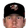

Franchise record book · MLB
Houston Astros
Seasons covered: 1962–2002. Only games played for this franchise count.
Read this first: seasons 1871–2001 are real MLB history that shipped with the OOTP file, mapped by OOTP onto this universe's 30 original franchises (club names as they were that season). 2002 is this universe, season to date (top tiers: MLB, ABL, FBL). Player names are as the export stores them; OOTP gives some historical players generated names.
Home runs
| # | Player | Season | Team | Home runs |
|---|---|---|---|---|
| #1 | 2000 |  Houston Astros Houston Astros | 47 | |
| #2 | Richard Hidalgo • | 2000 | Houston Astros | 44 |
| #3 | 1997 | Houston Astros | 43 | |
| #4 | 1999 | Houston Astros | 42 | |
| #5 | 1994 | Houston Astros | 39 | |
| #6 | 2001 | Houston Astros | 39 | |
| #7 | 1998 | Houston Astros | 38 | |
| #8 | 1967 | Houston Astros | 37 | |
| #9 | 2001 | Houston Astros | 34 | |
| #10 | 1989 | Houston Astros | 34 |
Hits
| # | Player | Season | Team | Hits |
|---|---|---|---|---|
| #1 | Craig Biggio • | 1998 | Houston Astros | 210 |
| #2 | 1998 | Houston Astros | 198 | |
| #3 | 1978 | Houston Astros | 195 | |
| #4 | 2001 | Houston Astros | 191 | |
| #5 | Craig Biggio • | 1997 | Houston Astros | 191 |
| #6 | 1983 | Houston Astros | 189 | |
| #7 | Craig Biggio • | 1999 | Houston Astros | 188 |
| #8 | 1984 | Houston Astros | 187 | |
| #9 | 1980 | Houston Astros | 185 | |
| #10 | 1974 | Houston Astros | 185 |
RBI
| # | Player | Season | Team | RBI |
|---|---|---|---|---|
| #1 | 1997 | Houston Astros | 135 | |
| #2 | 2000 | Houston Astros | 132 | |
| #3 | 2001 | Houston Astros | 130 | |
| #4 | 2001 | Houston Astros | 126 | |
| #5 | 1999 | Houston Astros | 126 | |
| #6 | 1998 | Houston Astros | 124 | |
| #7 | Richard Hidalgo • | 2000 | Houston Astros | 122 |
| #8 | 1996 | Houston Astros | 120 | |
| #9 | 1994 | Houston Astros | 116 | |
| #10 | 2000 | Houston Astros | 114 |
Runs
| # | Player | Season | Team | Runs |
|---|---|---|---|---|
| #1 | 2000 | Houston Astros | 152 | |
| #2 | Craig Biggio • | 1997 | Houston Astros | 146 |
| #3 | 1999 | Houston Astros | 143 | |
| #4 | 2001 | Houston Astros | 126 | |
| #5 | 1998 | Houston Astros | 124 | |
| #6 | Craig Biggio • | 1995 | Houston Astros | 123 |
| #7 | Craig Biggio • | 1998 | Houston Astros | 123 |
| #8 | Craig Biggio • | 1999 | Houston Astros | 123 |
| #9 | Richard Hidalgo • | 2000 | Houston Astros | 118 |
| #10 | Craig Biggio • | 2001 | Houston Astros | 118 |
Stolen bases
Doubles
| # | Player | Season | Team | Doubles |
|---|---|---|---|---|
| #1 | Craig Biggio • | 1999 | Houston Astros | 56 |
| #2 | 2001 | Houston Astros | 55 | |
| #3 | Craig Biggio • | 1998 | Houston Astros | 51 |
| #4 | 1996 | Houston Astros | 48 | |
| #5 | 1967 | Houston Astros | 44 | |
| #6 | Craig Biggio • | 1994 | Houston Astros | 44 |
| #7 | 2001 | Houston Astros | 43 | |
| #8 | Richard Hidalgo • | 2000 | Houston Astros | 42 |
| #9 | 1998 | Houston Astros | 41 | |
| #10 | Craig Biggio • | 1993 | Houston Astros | 41 |
Triples
Walks
| # | Player | Season | Team | Walks |
|---|---|---|---|---|
| #1 | 1999 | Houston Astros | 149 | |
| #2 | 1969 | Houston Astros | 148 | |
| #3 | 1996 | Houston Astros | 135 | |
| #4 | 1997 | Houston Astros | 127 | |
| #5 | 1969 | Houston Astros | 110 | |
| #6 | 1998 | Houston Astros | 109 | |
| #7 | 2000 | Houston Astros | 107 | |
| #8 | 1970 | Houston Astros | 106 | |
| #9 | 2001 | Houston Astros | 106 | |
| #10 | 1972 | Houston Astros | 103 |
Total bases
| # | Player | Season | Team | Total bases |
|---|---|---|---|---|
| #1 | 2000 | Houston Astros | 363 | |
| #2 | 2001 | Houston Astros | 358 | |
| #3 | Richard Hidalgo • | 2000 | Houston Astros | 355 |
| #4 | 2001 | Houston Astros | 341 | |
| #5 | 1998 | Houston Astros | 340 | |
| #6 | 1997 | Houston Astros | 335 | |
| #7 | 1999 | Houston Astros | 332 | |
| #8 | Craig Biggio • | 1998 | Houston Astros | 325 |
| #9 | 1996 | Houston Astros | 324 | |
| #10 | Craig Biggio • | 1997 | Houston Astros | 310 |
Batting average qualified
| # | Player | Season | Team | Batting average |
|---|---|---|---|---|
| #1 | 1994 | Houston Astros | .367 | |
| #2 | 2000 | Houston Astros | .355 | |
| #3 | 1995 | Houston Astros | .334 | |
| #4 | 1967 | Houston Astros | .333 | |
| #5 | 2001 | Houston Astros | .331 | |
| #6 | 2001 | Houston Astros | .331 | |
| #7 | 1999 | Houston Astros | .325 | |
| #8 | Craig Biggio • | 1998 | Houston Astros | .325 |
| #9 | 2002 (MLB) | Houston Astros | .324 | |
| #10 | 1975 | Houston Astros | .324 |
On-base % qualified
| # | Player | Season | Team | On-base % |
|---|---|---|---|---|
| #1 | 1999 | Houston Astros | .454 | |
| #2 | 1994 | Houston Astros | .451 | |
| #3 | 1996 | Houston Astros | .451 | |
| #4 | 1969 | Houston Astros | .436 | |
| #5 | 2001 | Houston Astros | .430 | |
| #6 | 1997 | Houston Astros | .425 | |
| #7 | 2000 | Houston Astros | .424 | |
| #8 | 1998 | Houston Astros | .424 | |
| #9 | 2000 | Houston Astros | .416 | |
| #10 | Craig Biggio • | 1997 | Houston Astros | .415 |
Slugging % qualified
| # | Player | Season | Team | Slugging % |
|---|---|---|---|---|
| #1 | 1994 | Houston Astros | .750 | |
| #2 | Richard Hidalgo • | 2000 | Houston Astros | .636 |
| #3 | 2000 | Houston Astros | .623 | |
| #4 | 2001 | Houston Astros | .620 | |
| #5 | 2000 | Houston Astros | .615 | |
| #6 | 2002 (MLB) | Houston Astros | .600 | |
| #7 | 1997 | Houston Astros | .592 | |
| #8 | 1999 | Houston Astros | .591 | |
| #9 | 1998 | Houston Astros | .582 | |
| #10 | 1999 | Houston Astros | .571 |
OPS qualified
| # | Player | Season | Team | OPS |
|---|---|---|---|---|
| #1 | 1994 | Houston Astros | 1.201 | |
| #2 | 2001 | Houston Astros | 1.051 | |
| #3 | 1999 | Houston Astros | 1.045 | |
| #4 | 2000 | Houston Astros | 1.039 | |
| #5 | 2000 | Houston Astros | 1.039 | |
| #6 | Richard Hidalgo • | 2000 | Houston Astros | 1.028 |
| #7 | 1996 | Houston Astros | 1.021 | |
| #8 | 1997 | Houston Astros | 1.017 | |
| #9 | 2002 (MLB) | Houston Astros | 1.004 | |
| #10 | 1998 | Houston Astros | .981 |
WAR (OOTP)
| # | Player | Season | Team | WAR (OOTP) |
|---|---|---|---|---|
| #1 | 1972 | Houston Astros | 8.5 | |
| #2 | 1969 | Houston Astros | 8.1 | |
| #3 | 2001 | Houston Astros | 8.0 | |
| #4 | 1996 | Houston Astros | 8.0 | |
| #5 | 1999 | Houston Astros | 8.0 | |
| #6 | Craig Biggio • | 1997 | Houston Astros | 7.6 |
| #7 | 2000 | Houston Astros | 7.4 | |
| #8 | Craig Biggio • | 1998 | Houston Astros | 7.4 |
| #9 | 1994 | Houston Astros | 7.4 | |
| #10 | 1997 | Houston Astros | 7.4 |
Wins
Strikeouts
| # | Player | Season | Team | Strikeouts |
|---|---|---|---|---|
| #1 | 1979 | Houston Astros | 313 | |
| #2 | 1986 | Houston Astros | 306 | |
| #3 | 1978 | Houston Astros | 303 | |
| #4 | 1987 | Houston Astros | 270 | |
| #5 | 1982 | Houston Astros | 245 | |
| #6 | 1969 | Houston Astros | 235 | |
| #7 | 1987 | Houston Astros | 233 | |
| #8 | 1969 | Houston Astros | 232 | |
| #9 | 1988 | Houston Astros | 228 | |
| #10 | 1996 | Houston Astros | 219 |
Saves
Innings
| # | Player | Season | Team | Innings |
|---|---|---|---|---|
| #1 | 1969 | Houston Astros | 305.1 | |
| #2 | 1979 | Houston Astros | 292.1 | |
| #3 | 1976 | Houston Astros | 291.0 | |
| #4 | 1973 | Houston Astros | 279.1 | |
| #5 | 1978 | Houston Astros | 275.1 | |
| #6 | 1986 | Houston Astros | 275.1 | |
| #7 | 1982 | Houston Astros | 270.0 | |
| #8 | 1970 | Houston Astros | 269.2 | |
| #9 | 1971 | Houston Astros | 268.0 | |
| #10 | 1977 | Houston Astros | 267.0 |
Complete games
Shutouts
ERA qualified
| # | Player | Season | Team | ERA |
|---|---|---|---|---|
| #1 | 1981 | Houston Astros | 1.69 | |
| #2 | 1981 | Houston Astros | 2.18 | |
| #3 | 1990 | Houston Astros | 2.21 | |
| #4 | 1966 | Houston Astros | 2.22 | |
| #5 | 1986 | Houston Astros | 2.22 | |
| #6 | 1969 | Houston Astros | 2.33 | |
| #7 | 1971 | Houston Astros | 2.45 | |
| #8 | 1982 | Houston Astros | 2.47 | |
| #9 | 1971 | Houston Astros | 2.53 | |
| #10 | 1997 | Houston Astros | 2.57 |
WHIP qualified
| # | Player | Season | Team | WHIP |
|---|---|---|---|---|
| #1 | 1986 | Houston Astros | 0.92 | |
| #2 | 1963 | Houston Colt .45's | 0.97 | |
| #3 | 1988 | Houston Astros | 0.98 | |
| #4 | 1981 | Houston Astros | 1.01 | |
| #5 | 1969 | Houston Astros | 1.02 | |
| #6 | 1971 | Houston Astros | 1.02 | |
| #7 | 1990 | Houston Astros | 1.03 | |
| #8 | 1989 | Houston Astros | 1.06 | |
| #9 | 1981 | Houston Astros | 1.06 | |
| #10 | 1982 | Houston Astros | 1.07 |
K/9 qualified
| # | Player | Season | Team | K/9 |
|---|---|---|---|---|
| #1 | 1987 | Houston Astros | 11.5 | |
| #2 | 1986 | Houston Astros | 10.0 | |
| #3 | 1978 | Houston Astros | 9.9 | |
| #4 | 1986 | Houston Astros | 9.8 | |
| #5 | 1984 | Houston Astros | 9.7 | |
| #6 | 1979 | Houston Astros | 9.6 | |
| #7 | 1969 | Houston Astros | 9.6 | |
| #8 | 1969 | Houston Astros | 9.4 | |
| #9 | 1988 | Houston Astros | 9.3 | |
| #10 | 1996 | Houston Astros | 9.0 |
WAR (OOTP)
| # | Player | Season | Team | WAR (OOTP) |
|---|---|---|---|---|
| #1 | 1979 | Houston Astros | 10.9 | |
| #2 | 1986 | Houston Astros | 10.4 | |
| #3 | 1969 | Houston Astros | 8.4 | |
| #4 | 1978 | Houston Astros | 7.9 | |
| #5 | 1987 | Houston Astros | 7.5 | |
| #6 | 1966 | Houston Astros | 7.1 | |
| #7 | Shane Reynolds • | 1999 | Houston Astros | 6.9 |
| #8 | 1987 | Houston Astros | 6.7 | |
| #9 | Shane Reynolds • | 1996 | Houston Astros | 6.4 |
| #10 | 1962 | Houston Colt .45's | 6.2 |
Home runs
| # | Player | Years | Home runs |
|---|---|---|---|
| #1 | 1991–02 | 349 | |
| #2 | 1963–77 | 223 | |
| #3 | Craig Biggio • | 1988–02 | 180 |
| #4 | 1984–93 | 166 | |
| #5 | 1970–86 | 163 | |
| #6 | 1966–84 | 139 | |
| #7 | 1970–88 | 138 | |
| #8 | 1967–77 | 128 | |
| #9 | 1987–01 | 103 | |
| #10 | 1990–02 | 95 |
Hits
| # | Player | Years | Hits |
|---|---|---|---|
| #1 | Craig Biggio • | 1988–02 | 2149 |
| #2 | 1970–88 | 1937 | |
| #3 | 1991–02 | 1803 | |
| #4 | 1970–86 | 1659 | |
| #5 | 1966–84 | 1448 | |
| #6 | 1977–91 | 1357 | |
| #7 | 1963–77 | 1291 | |
| #8 | 1982–93 | 1139 | |
| #9 | 1972–86 | 1124 | |
| #10 | 1967–77 | 1060 |
RBI
| # | Player | Years | RBI |
|---|---|---|---|
| #1 | 1991–02 | 1223 | |
| #2 | 1970–88 | 942 | |
| #3 | Craig Biggio • | 1988–02 | 811 |
| #4 | 1966–84 | 782 | |
| #5 | 1970–86 | 778 | |
| #6 | 1963–77 | 719 | |
| #7 | 1967–77 | 600 | |
| #8 | 1987–01 | 546 | |
| #9 | 1984–93 | 518 | |
| #10 | 1982–95 | 468 |
Runs
| # | Player | Years | Runs |
|---|---|---|---|
| #1 | Craig Biggio • | 1988–02 | 1305 |
| #2 | 1991–02 | 1199 | |
| #3 | 1970–86 | 890 | |
| #4 | 1970–88 | 871 | |
| #5 | 1963–77 | 829 | |
| #6 | 1977–91 | 676 | |
| #7 | 1966–84 | 640 | |
| #8 | 1982–93 | 611 | |
| #9 | 1963–84 | 597 | |
| #10 | 1972–86 | 522 |
Stolen bases
| # | Player | Years | Stolen bases |
|---|---|---|---|
| #1 | 1970–86 | 487 | |
| #2 | Craig Biggio • | 1988–02 | 365 |
| #3 | 1970–88 | 288 | |
| #4 | 1963–84 | 219 | |
| #5 | 1977–91 | 217 | |
| #6 | 1982–93 | 191 | |
| #7 | 1972–86 | 191 | |
| #8 | 1963–77 | 180 | |
| #9 | 1991–02 | 178 | |
| #10 | 1987–94 | 153 |
Doubles
| # | Player | Years | Doubles |
|---|---|---|---|
| #1 | Craig Biggio • | 1988–02 | 437 |
| #2 | 1991–02 | 394 | |
| #3 | 1970–86 | 343 | |
| #4 | 1970–88 | 335 | |
| #5 | 1966–84 | 241 | |
| #6 | 1963–77 | 228 | |
| #7 | 1977–91 | 226 | |
| #8 | 1987–01 | 204 | |
| #9 | 1967–77 | 197 | |
| #10 | 1982–95 | 194 |
Triples
| # | Player | Years | Triples |
|---|---|---|---|
| #1 | 1970–88 | 80 | |
| #2 | 1963–84 | 63 | |
| #3 | 1970–80 | 62 | |
| #4 | 1977–91 | 56 | |
| #5 | 1970–86 | 55 | |
| #6 | 1975–89 | 55 | |
| #7 | Craig Biggio • | 1988–02 | 46 |
| #8 | 1972–86 | 45 | |
| #9 | 1989–02 | 41 | |
| #10 | 1982–93 | 35 |
Walks
| # | Player | Years | Walks |
|---|---|---|---|
| #1 | 1991–02 | 1098 | |
| #2 | Craig Biggio • | 1988–02 | 913 |
| #3 | 1963–77 | 847 | |
| #4 | 1970–88 | 730 | |
| #5 | 1963–84 | 678 | |
| #6 | 1982–93 | 585 | |
| #7 | 1970–86 | 534 | |
| #8 | 1966–84 | 508 | |
| #9 | 1977–91 | 502 | |
| #10 | 1967–77 | 402 |
Total bases
| # | Player | Years | Total bases |
|---|---|---|---|
| #1 | 1991–02 | 3296 | |
| #2 | Craig Biggio • | 1988–02 | 3218 |
| #3 | 1970–88 | 2846 | |
| #4 | 1970–86 | 2601 | |
| #5 | 1963–77 | 2252 | |
| #6 | 1966–84 | 2166 | |
| #7 | 1977–91 | 1881 | |
| #8 | 1967–77 | 1701 | |
| #9 | 1982–93 | 1596 | |
| #10 | 1987–01 | 1578 |
Batting average min 2,000 PA
| # | Player | Years | Batting average |
|---|---|---|---|
| #1 | 1991–02 | .303 | |
| #2 | 1966–84 | .297 | |
| #3 | 1970–88 | .292 | |
| #4 | Craig Biggio • | 1988–02 | .291 |
| #5 | 1970–86 | .289 | |
| #6 | 1991–01 | .284 | |
| #7 | 1972–86 | .281 | |
| #8 | 1977–91 | .281 | |
| #9 | 1989–02 | .281 | |
| #10 | 1982–95 | .278 |
On-base % min 2,000 PA
| # | Player | Years | On-base % |
|---|---|---|---|
| #1 | 1991–02 | .415 | |
| #2 | Craig Biggio • | 1988–02 | .381 |
| #3 | 1963–84 | .374 | |
| #4 | 1966–84 | .364 | |
| #5 | 1963–77 | .362 | |
| #6 | 1970–88 | .359 | |
| #7 | 1962–74 | .355 | |
| #8 | 1982–93 | .355 | |
| #9 | 1970–86 | .351 | |
| #10 | 1977–91 | .349 |
Slugging % min 2,000 PA
| # | Player | Years | Slugging % |
|---|---|---|---|
| #1 | 1991–02 | .554 | |
| #2 | 1984–93 | .483 | |
| #3 | 1970–86 | .454 | |
| #4 | 1963–77 | .445 | |
| #5 | 1966–84 | .444 | |
| #6 | Craig Biggio • | 1988–02 | .436 |
| #7 | 1991–01 | .430 | |
| #8 | 1970–88 | .429 | |
| #9 | 1982–95 | .423 | |
| #10 | 1990–02 | .417 |
OPS min 2,000 PA
| # | Player | Years | OPS |
|---|---|---|---|
| #1 | 1991–02 | .969 | |
| #2 | 1984–93 | .819 | |
| #3 | Craig Biggio • | 1988–02 | .817 |
| #4 | 1966–84 | .808 | |
| #5 | 1963–77 | .806 | |
| #6 | 1970–86 | .805 | |
| #7 | 1970–88 | .789 | |
| #8 | 1991–01 | .771 | |
| #9 | 1963–84 | .767 | |
| #10 | 1982–95 | .753 |
WAR (OOTP)
| # | Player | Years | WAR (OOTP) |
|---|---|---|---|
| #1 | 1991–02 | 72.0 | |
| #2 | Craig Biggio • | 1988–02 | 60.9 |
| #3 | 1970–86 | 51.4 | |
| #4 | 1963–77 | 47.3 | |
| #5 | 1970–88 | 42.5 | |
| #6 | 1966–84 | 35.7 | |
| #7 | 1963–84 | 34.0 | |
| #8 | 1977–91 | 25.0 | |
| #9 | 1982–93 | 24.3 | |
| #10 | 1967–77 | 20.3 |
Wins
| # | Player | Years | Wins |
|---|---|---|---|
| #1 | 1967–88 | 144 | |
| #2 | 1964–77 | 137 | |
| #3 | 1979–91 | 110 | |
| #4 | 1971–80 | 107 | |
| #5 | 1966–93 | 106 | |
| #6 | 1966–74 | 104 | |
| #7 | Shane Reynolds • | 1992–02 | 100 |
| #8 | 1976–90 | 93 | |
| #9 | 1970–86 | 78 | |
| #10 | 1991–02 | 71 |
Strikeouts
| # | Player | Years | Strikeouts |
|---|---|---|---|
| #1 | 1966–93 | 1866 | |
| #2 | 1971–80 | 1493 | |
| #3 | 1964–77 | 1487 | |
| #4 | 1979–91 | 1318 | |
| #5 | 1966–74 | 1283 | |
| #6 | Shane Reynolds • | 1992–02 | 1262 |
| #7 | 1967–88 | 1178 | |
| #8 | 1991–02 | 973 | |
| #9 | 1976–90 | 946 | |
| #10 | 1970–86 | 815 |
Saves
| # | Player | Years | Saves |
|---|---|---|---|
| #1 | 1980–92 | 199 | |
| #2 | Billy Wagner • | 1995–02 | 146 |
| #3 | 1961–73 | 76 | |
| #4 | 1976–87 | 72 | |
| #5 | 1982–00 | 62 | |
| #6 | 1970–86 | 50 | |
| #7 | 1981–93 | 43 | |
| #8 | Todd Jones • | 1993–02 | 39 |
| #9 | 1956–67 | 36 | |
| #10 | 1994–99 | 29 |
Innings
| # | Player | Years | Innings |
|---|---|---|---|
| #1 | 1964–77 | 2294.1 | |
| #2 | 1967–88 | 2270.0 | |
| #3 | 1966–93 | 1854.2 | |
| #4 | 1966–74 | 1748.1 | |
| #5 | 1976–90 | 1738.0 | |
| #6 | 1979–91 | 1704.0 | |
| #7 | 1971–80 | 1606.0 | |
| #8 | Shane Reynolds • | 1992–02 | 1548.1 |
| #9 | 1970–86 | 1493.2 | |
| #10 | 1991–02 | 1200.0 |
Complete games
| # | Player | Years | Complete games |
|---|---|---|---|
| #1 | 1964–77 | 106 | |
| #2 | 1967–88 | 82 | |
| #3 | 1966–74 | 78 | |
| #4 | 1971–80 | 76 | |
| #5 | 1979–91 | 42 | |
| #6 | 1956–69 | 41 | |
| #7 | 1976–90 | 41 | |
| #8 | 1959–77 | 38 | |
| #9 | 1966–93 | 38 | |
| #10 | 1970–86 | 36 |
Shutouts
| # | Player | Years | Shutouts |
|---|---|---|---|
| #1 | 1964–77 | 25 | |
| #2 | 1979–91 | 21 | |
| #3 | 1967–88 | 21 | |
| #4 | 1966–74 | 20 | |
| #5 | 1971–80 | 19 | |
| #6 | 1976–90 | 18 | |
| #7 | 1966–93 | 13 | |
| #8 | 1969–81 | 11 | |
| #9 | 1970–86 | 9 | |
| #10 | 1969–82 | 9 |
ERA min 500 IP
| # | Player | Years | ERA |
|---|---|---|---|
| #1 | 1976–87 | 2.42 | |
| #2 | 1980–92 | 2.53 | |
| #3 | 1959–77 | 2.74 | |
| #4 | 1966–93 | 3.13 | |
| #5 | 1966–74 | 3.15 | |
| #6 | 1971–80 | 3.15 | |
| #7 | 1970–86 | 3.18 | |
| #8 | 1978–98 | 3.21 | |
| #9 | 1967–88 | 3.22 | |
| #10 | 1964–77 | 3.28 |
WHIP min 500 IP
| # | Player | Years | WHIP |
|---|---|---|---|
| #1 | 1976–87 | 1.11 | |
| #2 | 1956–69 | 1.14 | |
| #3 | 1979–91 | 1.14 | |
| #4 | 1959–77 | 1.16 | |
| #5 | 1978–98 | 1.16 | |
| #6 | 1958–70 | 1.17 | |
| #7 | 1980–92 | 1.19 | |
| #8 |  Pete Harnisch • | 1988–02 | 1.21 |
| #9 | 1966–93 | 1.21 | |
| #10 | 1966–74 | 1.21 |
K/9 min 500 IP
| # | Player | Years | K/9 |
|---|---|---|---|
| #1 | 1966–93 | 9.1 | |
| #2 | 1971–80 | 8.4 | |
| #3 | Shane Reynolds • | 1992–02 | 7.3 |
| #4 | 1991–02 | 7.3 | |
| #5 | 1959–77 | 7.2 | |
| #6 | Scott Elarton • | 1998–02 | 7.1 |
| #7 | Pete Harnisch • | 1988–02 | 7.1 |
| #8 | 1976–87 | 7.1 | |
| #9 | 1979–91 | 7.0 | |
| #10 | 1969–82 | 6.8 |
WAR (OOTP)
| # | Player | Years | WAR (OOTP) |
|---|---|---|---|
| #1 | 1966–93 | 45.9 | |
| #2 | 1971–80 | 39.7 | |
| #3 | 1964–77 | 38.0 | |
| #4 | Shane Reynolds • | 1992–02 | 36.0 |
| #5 | 1979–91 | 34.8 | |
| #6 | 1966–74 | 31.1 | |
| #7 | 1967–88 | 29.6 | |
| #8 | 1970–86 | 23.4 | |
| #9 | 1976–90 | 22.6 | |
| #10 | 1956–69 | 18.5 |
The franchise's best real-history seasons by winning percentage.
| Season | Club | W | L | PCT | Postseason |
|---|---|---|---|---|---|
| 1998 | Houston Astros | 102 | 60 | .630 | Playoffs |
| 1999 | Houston Astros | 97 | 65 | .599 | Playoffs |
| 1986 | Houston Astros | 96 | 66 | .593 | Playoffs |
| 2001 | Houston Astros | 93 | 69 | .574 | Playoffs |
| 1994 | Houston Astros | 66 | 49 | .574 | |
| 1980 | Houston Astros | 93 | 70 | .571 | Playoffs |
| 1981 | Houston Astros | 61 | 49 | .555 | |
| 1979 | Houston Astros | 89 | 73 | .549 | |
| 1972 | Houston Astros | 84 | 69 | .549 | |
| 1989 | Houston Astros | 86 | 76 | .531 |